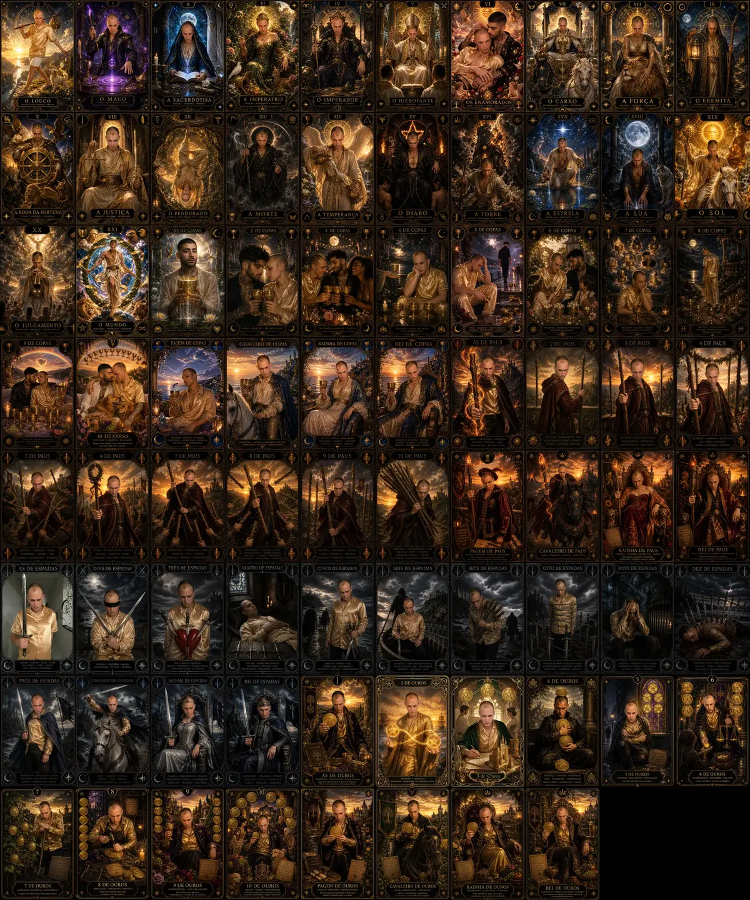

Construa uma base de Tarot sem decorar frases prontas
Este percurso organiza as 78 cartas em pequenas sessões de observação, lembrança, comparação e prática. Você começa pelo mapa do baralho e termina sabendo conduzir uma leitura simples e responsável.
✦Trinta dias constroem fundamentos; não encerram o aprendizado. O objetivo é criar método, autonomia e vontade de continuar.

OBSERVAR · RECORDAR · COMPARAR · INTEGRAR
Percurso
30 dias
Sessão mínima
10 minutos
Fases
4 movimentos
Orientação
Cartas diretas
O QUE ESTE PLANO ENTREGA
Uma base prática, não uma promessa de domínio instantâneo
Ao final do percurso, você terá reconhecido a arquitetura do baralho, comparado famílias de cartas, praticado perguntas e posições, feito sínteses curtas e definido o que precisa revisar. A fluência nasce quando esse ciclo continua.
01
Mapa antes dos detalhes
Você aprende 22 Arcanos Maiores, 56 Menores, quatro naipes, números e corte como famílias relacionadas.
02
Recordação antes da resposta
Em cada revisão, tente lembrar o que sabe antes de abrir uma explicação pronta.
03
Imagem antes da frase
Observe personagens, direção, objetos, cores e movimento antes de consultar palavras-chave.
04
Autonomia antes da certeza
Pratique linguagem possível, contextual e não determinista, respeitando limites e consentimento.
PLANEJADOR LOCAL · SEM CADASTRO
Abra a sessão do seu dia
Escolha onde você está e quanto tempo tem. O roteiro se adapta sem registrar sua resposta.
Dia 1 de 30
FASE 1 · MAPA DO BARALHO10 MINUTOS
Prepare seu caderno de observação
Defina um lugar simples para registrar imagem, hipótese, consulta e revisão.
01
2 min · RecordarEscreva o que você acredita que o Tarot pode e não pode fazer.
5 min · PraticarCrie quatro campos: observei, associei, consultei e revisarei.
3 min · RegistrarDefina uma intenção de estudo que preserve sua autonomia.
✦Privado por construção: o dia e a duração são usados somente nesta página. Nada é enviado ou guardado.
POR QUE O PERCURSO VOLTA AO QUE VOCÊ JÁ VIU
Quatro movimentos para estudar com mais intenção
O plano adapta princípios gerais de aprendizagem ao estudo simbólico: distribui o contato ao longo do tempo, pede recordação antes da consulta e alterna famílias para favorecer comparação.
↻
Espaçar
Revisite uma carta em dias diferentes, em vez de tentar absorver tudo em uma única sessão longa.
?
Recordar
Feche a explicação, tente reconstruir o que sabe e só depois confira o que faltou.
⇆
Comparar
Coloque números, naipes ou figuras lado a lado para notar semelhanças e diferenças.
✎
Explicar
Escreva uma frase própria que una imagem, estrutura, posição e pergunta sem decretar um destino.
O PERCURSO COMPLETO
Trinta dias, quatro fases e um próximo ciclo
Comece pelo dia 1, avance no seu ritmo e retome do ponto em que parou. Um dia perdido não precisa ser compensado nem transforma o plano em fracasso.
FASE 1 · DIAS 1–7
Enxergue o mapa do baralho
Crie um método de registro e reconheça a sequência dos 22 Arcanos Maiores antes de aprofundar detalhes.
I
DIA 01Preparação
Crie seu caderno de observação
Separe hipótese de consulta com quatro campos: observei, associei, consultei e revisarei.
Use o tempo disponível sem transformar atraso em culpa
As três durações seguem o mesmo ciclo. O que muda é a quantidade de comparação e aprofundamento, não o valor da sessão.
10
Minutos essenciais
2 min para recordar
5 min para observar e praticar
3 min para conferir e registrar
20
Minutos de prática
3 min para recordar
9 min para observar e praticar
5 min para comparar
3 min para registrar
30
Minutos de aprofundamento
5 min para recordar
12 min para observar e praticar
8 min para comparar
5 min para explicar e registrar
Perdeu um dia? Retome do ponto em que parou. Não dobre a sessão seguinte e não recomece por obrigação.
DÚVIDAS FREQUENTES
O que fazer quando o estudo não sai perfeito
É possível aprender Tarot em 30 dias?
É possível construir uma base, reconhecer a estrutura do baralho e iniciar leituras simples. Fluência, repertório e segurança exigem continuidade além deste percurso.
Preciso memorizar as 78 cartas antes de fazer uma leitura?
Não. Comece observando e consultando a biblioteca quando necessário. Tente recordar antes de conferir; o objetivo é compreender relações, não recitar 78 textos.
Quanto tempo preciso estudar por dia?
Escolha 10, 20 ou 30 minutos. A regularidade é mais útil do que transformar um dia perdido em uma sessão longa e cansativa.
O que faço se perder um dia?
Continue do ponto em que parou. O plano mede uma sequência de estudos, não uma obrigação de calendário, e não exige compensação.
Posso estudar sem um baralho físico?
Sim. Use a biblioteca das 78 cartas para estudo e o Tarot Livre para observação sem significado automático. Na Divina Bruxa, as cartas aparecem diretas e não se repetem durante a sessão.
FONTES E CRITÉRIO EDITORIAL
O que sustenta a estrutura deste plano
A composição do baralho foi conferida em fonte museológica. O ritmo de estudo adapta pesquisas sobre prática distribuída, recordação e comparação de categorias — sem transformar ciência da aprendizagem em prova sobre Tarot.
01
Victoria and Albert Museum — A history of tarot cards
Referência museológica para a composição tradicional do conjunto de 78 cartas e seu contexto histórico.